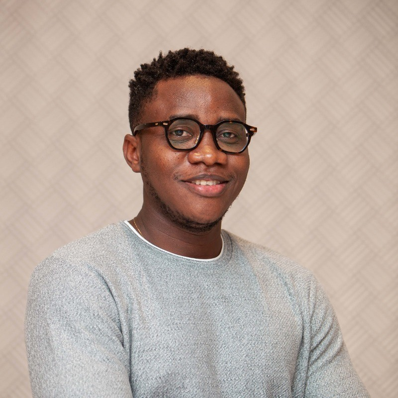
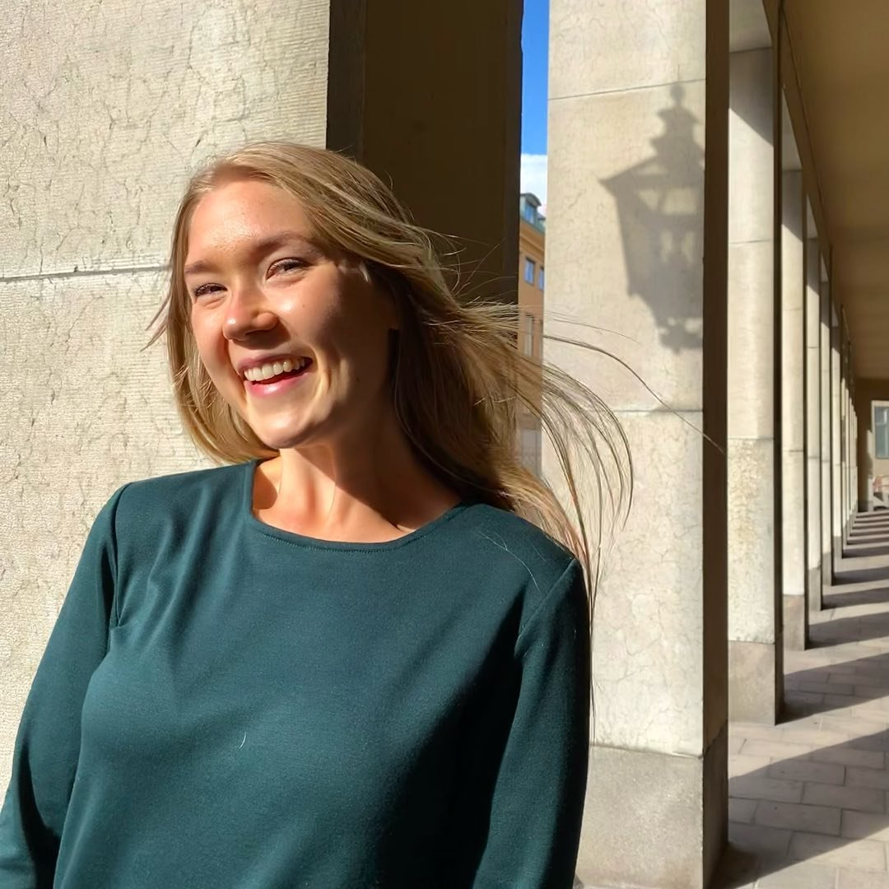

Endorsed by global leaders to represent ALU in Silicon Valley.
What This Website Is About: This portfolio presents the verified entrepreneurial, technical, academic, and ecosystem leadership record of Nuake Justice Tsekpo Jnr.—a second-year BSc International Business & Trade student and Mastercard Foundation Scholar at ALU Rwanda (CGPA 4.46/5.0)—tailored specifically for the ALU Global Leadership Program (GLP) in Silicon Valley 2027. It opens with direct recommendations from institutional leaders across four countries who have observed his discipline, venture execution, and collaborative leadership firsthand: Nana Darko Asiedu (Country Director, ALX Ghana), Pinja Tuomainen (Student Volunteer Coach at the Fun Learning Conference, The Campus Company Finland & Master's student at the University of Helsinki), Augustin Cyiza (IEEE Rwanda Subsection Chair), and Olexa Heshima (WTO Young Trade Leader 2025, Founder of the Young Trade Society & Master's student at Sciences Po, France). Scroll down past their recommendations to explore Nuake's seed-funded hardware and AI ventures, three Mastercard Foundation Scholars awards, campus-wide leadership mandates, and academic & industry immersions.
What institutional leaders say about Nuake
Each recommender below has worked directly with Nuake across pan-African tech acceleration, international conference execution, engineering ecosystems, or multilateral trade strategy. Their portraits sit above their words, accompanied by links to their full recommendation letters.

Nana Darko Asiedu
Led the ALX Ghana community where Nuake joined Cohort 1 of the ALX Pathway Program during its pilot phase, showing up at the hub every day with focus and consistency—graduating with a 96/100 (top score in Ghana) and earning the role of Peer Coach to keep fellow learners on track.
"What sets Justice apart is the combination of perseverance, responsibility, and a genuine desire to lift others as he rises. As a member of the pilot cohort, he helped set the standard for the learners who followed. These qualities align strongly with the ALU Silicon Valley Global Leadership Program's aim of developing ethical, entrepreneurial, and impact-driven leaders. I am confident that Justice will make the most of this opportunity, contribute meaningfully to his fellow participants, and bring valuable insights back to his peers and community in Ghana. I recommend him without reservation."
The Selection Committee, African Leadership University (16th October, 2026)
Dear Selection Committee,
I am pleased to recommend Justice Nuake for the ALU Silicon Valley Global Leadership Program in California. As Country Director of ALX Ghana, I had the privilege of leading the team and community in which Justice grew as a learner and a leader. He joined us in Cohort 1 of the ALX Pathway Program, when the program was still in its early phase, and he quickly distinguished himself as one of its most passionate and dedicated learners.
Justice's discipline was evident from the start. He showed up at the hub every day and worked through his modules with focus and consistency, even while the program was still taking shape. That steady commitment earned him the role of peer coach, where he supported his colleagues, helped them stay on track, and shared what he had learned along the way.
Beyond his own progress, Justice is a natural volunteer. Whenever the community needed support, whether for events, sessions, or helping fellow learners, he made himself available and remained so throughout his time with us. His reliability and generosity with his time made him someone the ALX Ghana team could always count on.
What sets Justice apart is the combination of perseverance, responsibility, and a genuine desire to lift others as he rises. As a member of the pilot cohort, he helped set the standard for the learners who followed. These qualities align strongly with the ALU Silicon Valley Global Leadership Program's aim of developing ethical, entrepreneurial, and impact-driven leaders.
I am confident that Justice will make the most of this opportunity, contribute meaningfully to his fellow participants, and bring valuable insights back to his peers and community in Ghana. I recommend him without reservation.
Warm regards,
Nana Darko Asiedu — Country Director, ALX Ghana (nasiedu@alxafrica.com)

Pinja Tuomainen
Led the volunteer team at the March 2026 Fun Learning Conference in Kigali (organized with Rwandan partners and MINEDUC for international policymakers, researchers, and ed-tech leaders), where Nuake was competitively selected as 1 of 20 ALU students.
"Beyond his contribution to the conference, Nuake's wider work as a founder and designer reflects qualities that I believe are valuable in emerging leaders. Taken together, I believe his work demonstrates initiative, resourcefulness, and a commitment to turning ideas into practical outcomes. It also reflects an ability to work across disciplines, adapt to different challenges, and remain mindful of the people his work is intended to serve... effective leadership requires not only ambition and ideas but also reliability, openness to feedback, and the ability to work with and bring people along."
LETTER OF RECOMMENDATION — Nuake Justice Tsekpo Jnr., ALU Global Leadership Program, Silicon Valley 2027
Dear Members of the ALU Global Leadership Program Selection Committee,
I am pleased to recommend Nuake Justice Tsekpo Jnr. for the ALU Global Leadership Program, Silicon Valley 2027. I had the opportunity to work with Nuake when he was selected as one of 20 students from African Leadership University to volunteer at the Fun Learning Conference in Kigali in March 2026. As the person responsible for leading the volunteer team, I was able to observe his approach to responsibilities, his interactions with others, and the qualities he brought to a collaborative working environment.
The Fun Learning Conference brought together educators and other stakeholders committed to strengthening education systems and empowering teachers. Organized with Rwandan partners and in collaboration with MINEDUC, the event focused on practical, context-relevant professional development for early childhood and lower-primary educators. It also welcomed international experts, policymakers, researchers, and education-technology leaders. Volunteers played an important role in supporting conference logistics, coordinating activities, and ensuring a welcoming and professional experience for participants. Nuake contributed to this collective effort while gaining hands-on experience in international event coordination, supporting the smooth running of the event and the experience of those attending.
Throughout our work together, Nuake demonstrated professionalism, a warm and inclusive manner, and a clear willingness to learn and adapt. He approached his responsibilities with care, communicated respectfully, and worked constructively with fellow volunteers and the wider multicultural conference team. I appreciated his ability to remain attentive to the needs of others while keeping sight of the team's shared objectives. He brought a considerate and collaborative approach to his work, demonstrating an understanding that contributing to a successful event requires not only fulfilling individual responsibilities but also supporting those around you.
Beyond his contribution to the conference, Nuake's wider work as a founder and designer reflects qualities that I believe are valuable in emerging leaders. Taken together, I believe his work demonstrates initiative, resourcefulness, and a commitment to turning ideas into practical outcomes. It also reflects an ability to work across disciplines, adapt to different challenges, and remain mindful of the people his work is intended to serve. In my experience, he brings a friendly and inclusive presence while remaining mindful of responsibilities and shared objectives. I believe these qualities are essential to effective leadership, which requires not only ambition and ideas but also reliability, openness to feedback, and the ability to work with and bring people along. Therefore, I recommend him for this opportunity and believe he has the potential to make meaningful contributions to the program and the communities he serves.
Sincerely,
Pinja Tuomainen — Student Volunteer Coach at Fun Learning Conference, The Campus Company · B.Ed., Master's Student in Special Education, Helsinki University · Cabin Crew, Finnair Oyj (pinja.tuomainen@hotmail.com)

Augustin Cyiza
Observed Nuake's technical execution and ecosystem leadership across IEEE Rwanda initiatives—including the IEEE CS SYP TechX Rwanda 2026 Hackathon (where Nuake's offline AI venture VunaLink won Runner-Up) and East Africa humanitarian technology and entrepreneurship programming supported by $15,000 in conference grant funding.
"Through IEEE Rwanda and the TechX Rwanda 2026 Hackathon—where his offline AI crop-disease platform VunaLink placed Runner-Up—alongside his leadership in mobilizing $15,000 in humanitarian technology grant funding, Nuake has proven himself as an exceptional technical builder and organizer. He combines hardware IoT, applied AI, and human-centered engineering with the maturity to represent East Africa's technical ecosystem in Silicon Valley."

Olexa Heshima
Entrusted Nuake in August 2026 as Strategy & Implementation Lead of the Young Trade Society to architect and execute its 3-year expansion plan across Rwandan universities—connecting students directly to the WTO, ITC, AfCFTA Secretariat, and UNCTAD.
"In August 2026, I appointed Nuake as Strategy & Implementation Lead to draft and execute the Young Trade Society's 3-year expansion roadmap—scaling from 300+ students at ALU in Year 1 to 900+ students across three universities by 2029, with 30 students placed into internships in Year 1. Whether building Tradify to simulate trade across 55 African nations or leading our expert sessions with the WTO, Nuake turns multilateral trade theory into practical tools and opportunities for his peers."